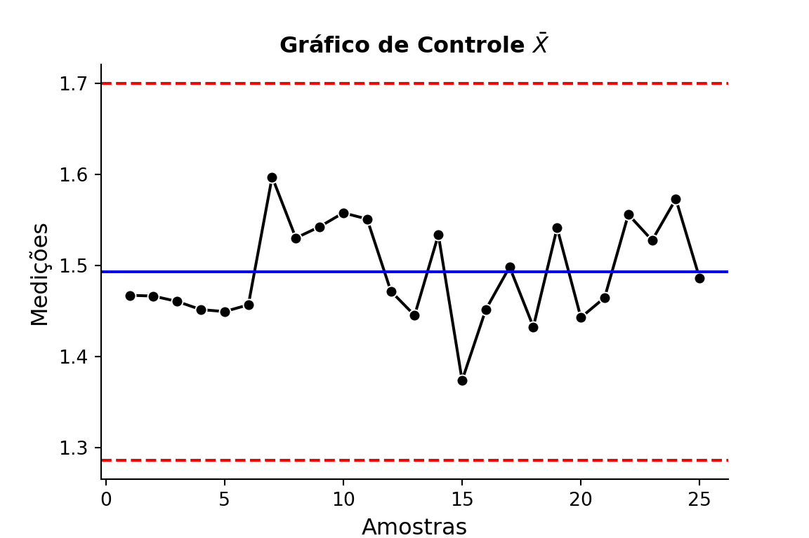
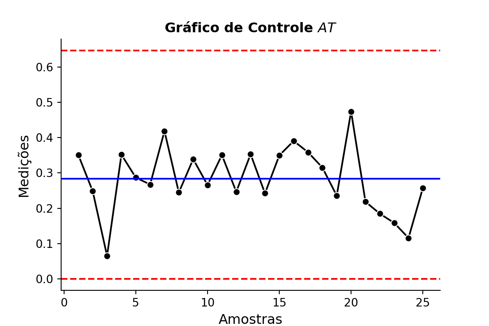
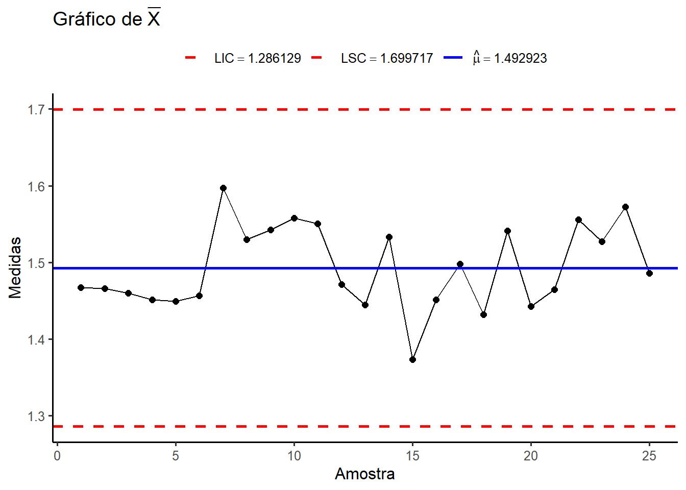
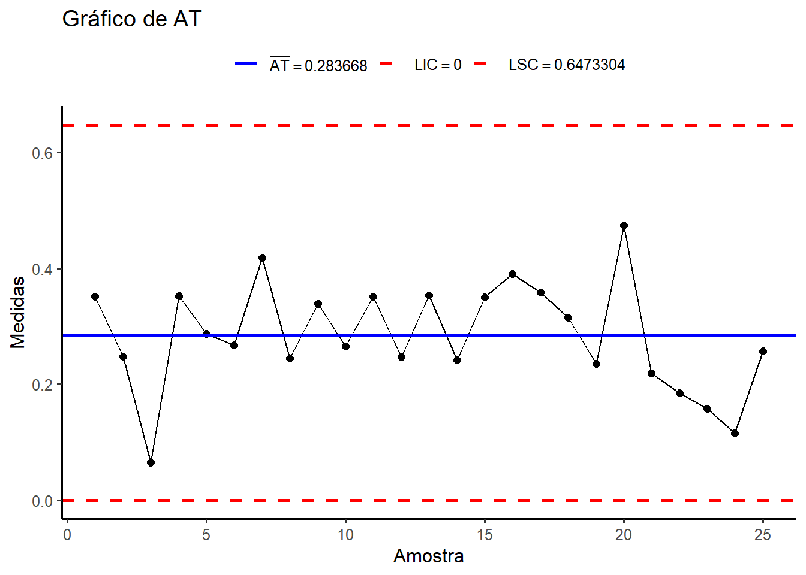
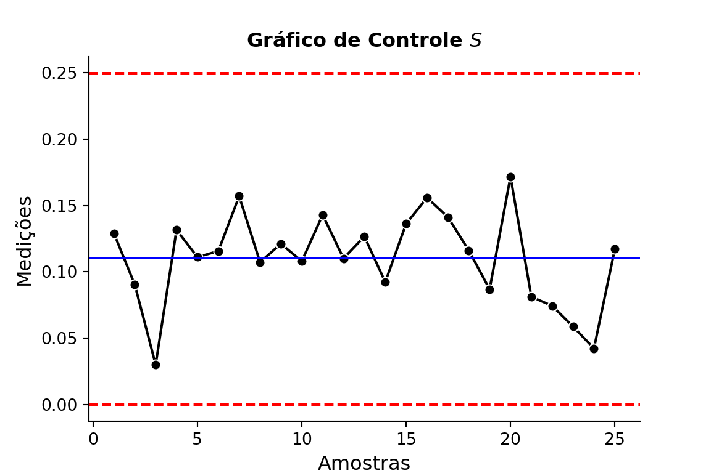
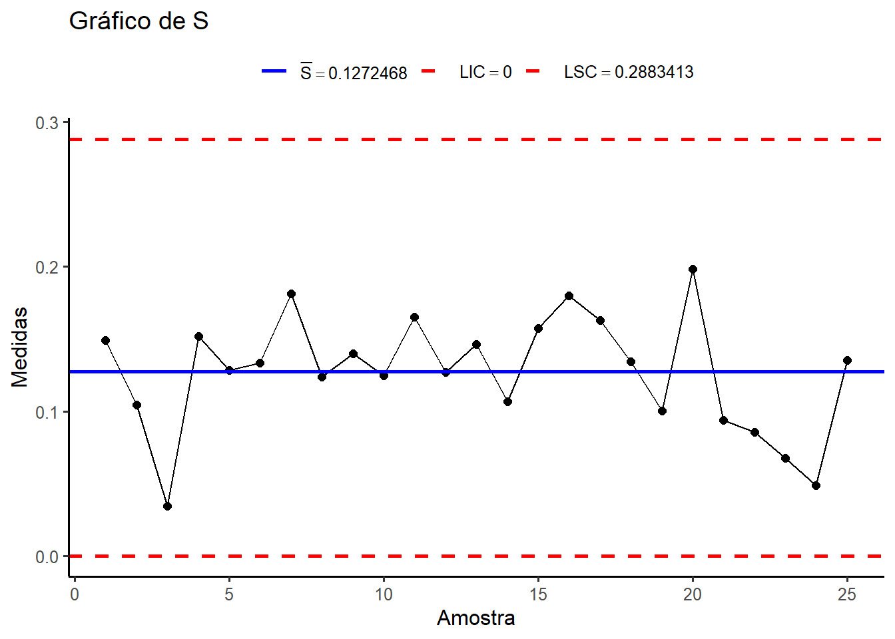
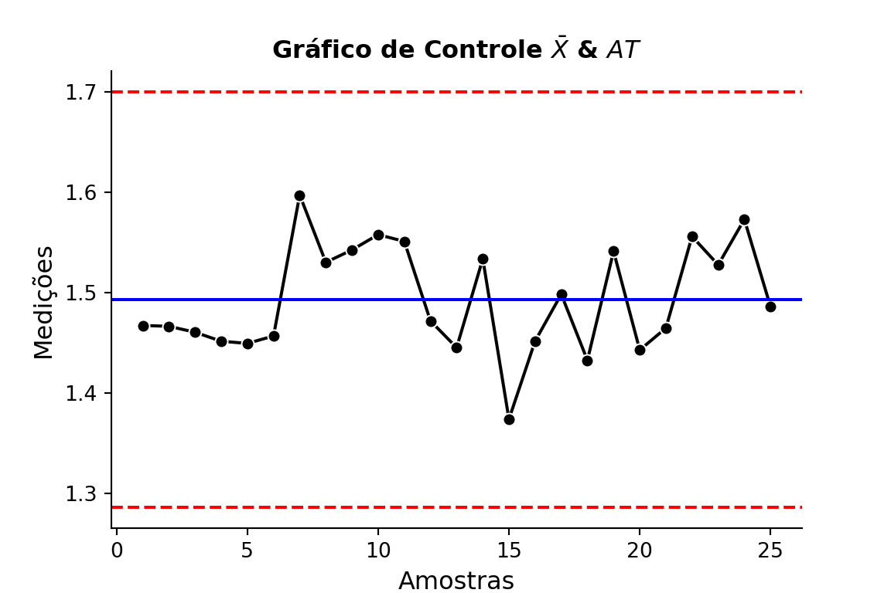
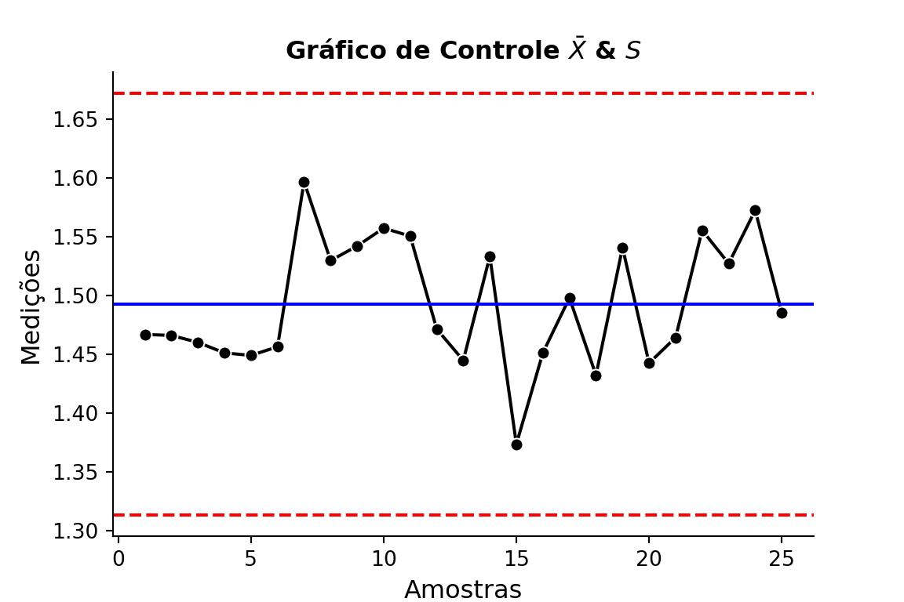
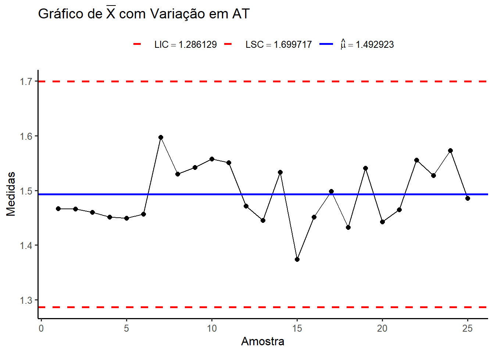
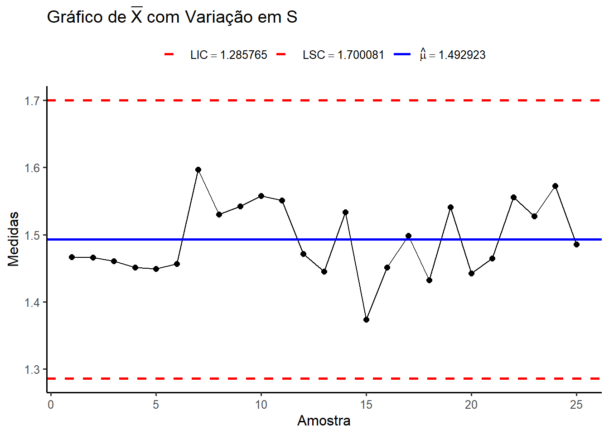

Código
library(ggplot2)
library(gridExtra)
library(dplyr)
library(reticulate)
use_python("C:/Users/user/anaconda3/python.exe", required = TRUE)library(ggplot2)
library(gridExtra)
library(dplyr)
library(reticulate)
use_python("C:/Users/user/anaconda3/python.exe", required = TRUE)# Tratamentos de Dados
import numpy as np
import pandas as pd
# Funções Estatísticas
from scipy import stats
# Visualizações Gráficas
import matplotlib.pyplot as plt
import seaborn as snsA inferência estatística permite tirar conclusões sobre um processo a partir de uma amostra.
Um estimador é uma função da amostra usada para estimar um parâmetro.
Boas propriedades desejáveis:
Não-viesado: Valor esperado (médio) do estimador é converge (igual) ao parâmetro verdadeiro, isto é, \[E [\hat{\theta}] = \theta.\]
Consistência: A medida que \(n\) (tamanho amostral) tende ao infinito, o estimador converge, em probabilidade, ao verdadeiro valor do parâmetro. Isto é, seja \(X_{1}, X_{2}, \ldots, X_{n}\) uma amostra aleatória de uma variável aleatória \(X\) com média \(\theta\) e variância \(\sigma^{2}\).
Um estimador para \(\theta\), é dito consistente se: \[\lim_{n \to \infty} P(|\hat{\theta} - \theta| > \epsilon) = 0, \forall \epsilon > 0.\]
Em geral, a desigualdade de Chebyshev pode ser usada para verificar essa propriedade: \[P(|\hat{\theta} - \theta| > \epsilon) \leq \dfrac{\sigma^{2}}{n \epsilon^{2}}.\]
Portanto, à medida que \(n\) cresce, a probabilidade de o estimador estar distante do verdadeiro parâmetro \(\theta\) tende a zero, garantindo sua consistência.
Um estimador \(\hat{\theta}\) é eficiente se sua variância atinge o limite inferior dado por: \[Var[\hat{\theta}] \geq \dfrac{1}{I(\theta)},\]
em que \(I(\theta)\) é a Informação de Fisher expressa por: \[I(\theta) = - E \left[ \dfrac{\partial^{2} L (\theta)}{\partial \theta^{2}} \right].\]
A dispersão do processo pode ser estimada usando:
O nível do processo geralmente se refere à média do processo.
Os gráficos de controle são ferramentas gráficas usadas para monitorar processos ao longo do tempo.
Proposta geral: \[\begin{cases} LIC & = \mu_{w} - 3 \times \sigma_{w} \\ LC & = \mu_{w} \\ LSC & = \mu_{w} + 3 \times \sigma_{w} \end{cases}\]
Temos que: \[P (LIC \leq X \leq \mu_{w}) = \alpha / 2\] e \[P (\mu_{w} \leq X \leq LSC) = \alpha / 2.\]
Se \(X_{i} \sim \text{Normal}(\mu, \sigma^{2})\), então \[P \left( \dfrac{\mu_{w} - 3 \sigma}{\sqrt{n}} \leq \bar{X}_{i} \leq \dfrac{\mu_{w} + 3 \sigma}{\sqrt{n}} \right) = 0,9973\] que é equivalente a \[P \left(-3 \leq \dfrac{\sqrt{n} (\bar{X}_{i} - \mu)}{\sigma} \leq 3 \right) = 0,9973\].
Principais gráficos:

Nota: Iremos utilizar \(n\) como o números de características mensuradas (colunas) no processo.
Quando utilizar:
Expressões para:
Quando utilizar:
Expressões para:
Menos comum;
Baseado na distribuição Qui-Quadrado (\(\chi^{2}\)).
Expressões:
Útil quando se deseja monitorar diretamente a variância do processo.
# Dados de Exemplo
list_of_data = [
[1.3235, 1.4128, 1.6744, 1.4573],
[1.4314, 1.3592, 1.6075, 1.4666],
[1.4284, 1.4871, 1.4932, 1.4324],
[1.5028, 1.6352, 1.3841, 1.2831],
[1.5604, 1.2735, 1.5265, 1.4362],
[1.5955, 1.5451, 1.3574, 1.3281],
[1.6274, 1.5064, 1.8366, 1.4177],
[1.4190, 1.4303, 1.6637, 1.6067],
[1.3884, 1.7277, 1.5355, 1.5176],
[1.4039, 1.6697, 1.5089, 1.6477],
[1.4158, 1.7667, 1.4278, 1.5927],
[1.5821, 1.3355, 1.5777, 1.3908],
[1.2856, 1.4106, 1.4447, 1.6388],
[1.4951, 1.4036, 1.5893, 1.6458],
[1.3589, 1.2863, 1.5996, 1.2497],
[1.5747, 1.5301, 1.5171, 1.1839],
[1.3680, 1.7269, 1.3957, 1.5019],
[1.4163, 1.3864, 1.3057, 1.6210],
[1.5796, 1.4185, 1.6541, 1.5116],
[1.7106, 1.4412, 1.2361, 1.3824],
[1.4371, 1.5051, 1.3485, 1.5670],
[1.4738, 1.5936, 1.6583, 1.4973],
[1.5917, 1.4333, 1.5551, 1.5295],
[1.6399, 1.5243, 1.5705, 1.5563],
[1.5797, 1.3663, 1.6240, 1.3732]
]
# Transformando em Array Multidimensional
arr = np.array(list_of_data)
# Visualizar
arrarray([[1.3235, 1.4128, 1.6744, 1.4573],
[1.4314, 1.3592, 1.6075, 1.4666],
[1.4284, 1.4871, 1.4932, 1.4324],
[1.5028, 1.6352, 1.3841, 1.2831],
[1.5604, 1.2735, 1.5265, 1.4362],
[1.5955, 1.5451, 1.3574, 1.3281],
[1.6274, 1.5064, 1.8366, 1.4177],
[1.419 , 1.4303, 1.6637, 1.6067],
[1.3884, 1.7277, 1.5355, 1.5176],
[1.4039, 1.6697, 1.5089, 1.6477],
[1.4158, 1.7667, 1.4278, 1.5927],
[1.5821, 1.3355, 1.5777, 1.3908],
[1.2856, 1.4106, 1.4447, 1.6388],
[1.4951, 1.4036, 1.5893, 1.6458],
[1.3589, 1.2863, 1.5996, 1.2497],
[1.5747, 1.5301, 1.5171, 1.1839],
[1.368 , 1.7269, 1.3957, 1.5019],
[1.4163, 1.3864, 1.3057, 1.621 ],
[1.5796, 1.4185, 1.6541, 1.5116],
[1.7106, 1.4412, 1.2361, 1.3824],
[1.4371, 1.5051, 1.3485, 1.567 ],
[1.4738, 1.5936, 1.6583, 1.4973],
[1.5917, 1.4333, 1.5551, 1.5295],
[1.6399, 1.5243, 1.5705, 1.5563],
[1.5797, 1.3663, 1.624 , 1.3732]])# Dados do Problema
dados <- c(
1.3235, 1.4128, 1.6744, 1.4573,
1.4314, 1.3592, 1.6075, 1.4666,
1.4284, 1.4871, 1.4932, 1.4324,
1.5028, 1.6352, 1.3841, 1.2831,
1.5604, 1.2735, 1.5265, 1.4362,
1.5955, 1.5451, 1.3574, 1.3281,
1.6274, 1.5064, 1.8366, 1.4177,
1.4190, 1.4303, 1.6637, 1.6067,
1.3884, 1.7277, 1.5355, 1.5176,
1.4039, 1.6697, 1.5089, 1.6477,
1.4158, 1.7667, 1.4278, 1.5927,
1.5821, 1.3355, 1.5777, 1.3908,
1.2856, 1.4106, 1.4447, 1.6388,
1.4951, 1.4036, 1.5893, 1.6458,
1.3589, 1.2863, 1.5996, 1.2497,
1.5747, 1.5301, 1.5171, 1.1839,
1.3680, 1.7269, 1.3957, 1.5019,
1.4163, 1.3864, 1.3057, 1.6210,
1.5796, 1.4185, 1.6541, 1.5116,
1.7106, 1.4412, 1.2361, 1.3824,
1.4371, 1.5051, 1.3485, 1.5670,
1.4738, 1.5936, 1.6583, 1.4973,
1.5917, 1.4333, 1.5551, 1.5295,
1.6399, 1.5243, 1.5705, 1.5563,
1.5797, 1.3663, 1.6240, 1.3732
)
# Formatação de Vetor para Matriz & de Matriz para Data Frame
tbl <- matrix(dados, ncol = 4, byrow = TRUE)
tbl.df <- data.frame(tbl)
# Visualizar
tbl.df# Média por Linha e Média das Médias
row_mean = np.mean(arr, axis=1)
mean_X_bar = np.mean(row_mean)
# Amplitude por Linha e Média da Amplitude
row_range = np.ptp(arr, axis=1)
mean_range = np.mean(row_range)
# Valor de Referência
A2 = 0.729
# Limites de Controle
LIC_X_bar = mean_X_bar - A2 * mean_range
LSC_X_bar = mean_X_bar + A2 * mean_range
# Impressão dos Resultados
print(f"LIC = {LIC_X_bar:.4f}")LIC = 1.2861print(f"LC = {mean_X_bar:.4f}")LC = 1.4929print(f"LSC = {LSC_X_bar:.4f}")LSC = 1.6997# Média por Linha e Média das Médias
row_mean <- apply(tbl.df, 1, mean)
mean_X_bar <- mean(row_mean)
# Função de Amplitude Total
f.range <- function(vec) max(vec) - min(vec)
# Amplitude por Linha e Média da Amplitude
row_range <- apply(tbl.df, 1, f.range)
mean_range <- mean(row_range)
# Valor de Referência
A2 <- 0.729
# Limites de Controle
LIC_X_bar = mean_X_bar - A2 * mean_range
LSC_X_bar = mean_X_bar + A2 * mean_range
# Impressão dos Resultados
cat("LIC =", round(LIC_X_bar, 4), "\n")LIC = 1.2861 cat("LC =", round(mean_X_bar, 4), "\n")LC = 1.4929 cat("LSC =", round(LSC_X_bar, 4))LSC = 1.6997# Valores de Referência
D3 = 0
D4 = 2.282
# Limites de Controle
LIC_AT = D3 * mean_range
LSC_AT = D4 * mean_range
# Impressão dos Resultados
print(f"LIC = {LIC_AT:.4f}")LIC = 0.0000print(f"LC = {mean_range:.4f}")LC = 0.2837print(f"LSC = {LSC_AT:.4f}")LSC = 0.6473# Valores de Referência
D3 <- 0
D4 <- 2.282
# Limites de Controle
LIC_AT = D3 * mean_range
LSC_AT = D4 * mean_range
# Impressão dos Resultados
cat("LIC =", round(LIC_AT, 4), "\n")LIC = 0 cat("LC =", round(mean_range, 4), "\n")LC = 0.2837 cat("LSC =", round(LSC_AT, 4))LSC = 0.6473# Configurações de Figura
fig, ax = plt.subplots(figsize=(6, 4), dpi=600)
# Gráfico de Controle
sns.lineplot(x=np.arange(1, len(arr) + 1), y=row_mean, marker="o", color="black", ax=ax)
ax.axhline(mean_X_bar, color="blue", label=f"Média = {mean_X_bar:.2f}", linewidth=1.5)
ax.axhline(LIC_X_bar, color="red", linestyle="--", label=f"LIC = {LIC_X_bar:.2f}", linewidth=1.5)
ax.axhline(LSC_X_bar, color="red", linestyle="--", label=f"LSC = {LSC_X_bar:.2f}", linewidth=1.5)
# Configurações de eixos e títulos
ax.set_title(r"Gráfico de Controle $\bar{X}$", fontsize=12, weight="bold")
ax.set_xlabel("Amostras", fontsize=12)
ax.set_ylabel("Medições", fontsize=12)
# Configuração de Legenda
ax.legend(loc="lower center", prop={"size": 10}, ncol=3, bbox_to_anchor=(0.5, - 0.25), frameon=False)
# Outras configurações
ax.spines["top"].set_visible(False)
ax.spines["right"].set_visible(False)
# Exibição da Figura
plt.show()
# -----------------------------
# Configurações de Figura
fig, ax = plt.subplots(figsize=(6, 4), dpi=600)
# Gráfico de Controle
sns.lineplot(x=np.arange(1, len(arr) + 1), y=row_range, marker="o", color="black", ax=ax)
ax.axhline(mean_range, color="blue", label=r"$\bar{AT}$"+f" = {mean_range:.2f}", linewidth=1.5)
ax.axhline(LIC_AT, color="red", linestyle="--", label=f"LIC = {LIC_AT:.2f}", linewidth=1.5)
ax.axhline(LSC_AT, color="red", linestyle="--", label=f"LSC = {LSC_AT:.2f}", linewidth=1.5)
# Configurações de eixos e títulos
ax.set_title(r"Gráfico de Controle $AT$", fontsize=12, weight="bold")
ax.set_xlabel("Amostras", fontsize=12)
ax.set_ylabel("Medições", fontsize=12)
# Configuração de Legenda
ax.legend(loc="lower center", prop={"size": 10}, ncol=3, bbox_to_anchor=(0.5, - 0.25), frameon=False)
# Outras configurações
ax.spines["top"].set_visible(False)
ax.spines["right"].set_visible(False)
# Exibição da Figura
plt.show()
ggplot(data = NULL, aes(x = 1:length(row_mean), y = row_mean)) +
geom_point(color = "black", size = 2) +
geom_line(color = "black") +
geom_hline(aes(yintercept = mean_X_bar, color = "Média Geral"), linewidth = 1) +
geom_hline(aes(yintercept = LIC_X_bar, color = "LIC"), linetype = 2, linewidth = 1) +
geom_hline(aes(yintercept = LSC_X_bar, color = "LSC"), linetype = 2, linewidth = 1) +
scale_color_manual(
name = NULL,
values = c("LIC" = "red", "LSC" = "red", "Média Geral" = "blue"),
labels = c(
bquote(LIC == .(LIC_X_bar)),
bquote(LSC == .(LSC_X_bar)),
bquote(hat(mu) == .(mean_X_bar))
)
) +
labs(
x = "Amostra",
y = "Medidas",
title = bquote("Gráfico de" ~ bar(X))
) +
theme_classic(base_size = 12) +
theme(legend.position = "top")
# -----------------------------
ggplot(data = NULL, aes(x = 1:length(row_range), y = row_range)) +
geom_point(color = "black", size = 2) +
geom_line(color = "black") +
geom_hline(aes(yintercept = mean_range, color = "Amplitude Média"), linewidth = 1) +
geom_hline(aes(yintercept = LIC_AT, color = "LIC"), linetype = 2, linewidth = 1) +
geom_hline(aes(yintercept = LSC_AT, color = "LSC"), linetype = 2, linewidth = 1) +
scale_color_manual(
name = NULL,
values = c("LIC" = "red", "LSC" = "red", "Amplitude Média" = "blue"),
labels = c(
bquote(bar(AT) == .(mean_range)),
bquote(LIC == .(LIC_AT)),
bquote(LSC == .(LSC_AT))
)
) +
labs(
x = "Amostra",
y = "Medidas",
title = bquote("Gráfico de" ~ AT)
) +
theme_classic(base_size = 12) +
theme(legend.position = "top")
# Desvio Padrão por Linha
row_std = np.std(arr, axis=1)
# Visualizar
row_stdarray([0.1290724 , 0.09031319, 0.02998611, 0.13160408, 0.11110829,
0.11562691, 0.15707416, 0.10726095, 0.12115558, 0.10802753,
0.14293566, 0.11013547, 0.12663948, 0.09229503, 0.13625765,
0.15594014, 0.14122292, 0.1161874 , 0.0868219 , 0.17182276,
0.08118089, 0.07429894, 0.05865364, 0.04222615, 0.11712756])# Desvio Padrão por Linha
row_std = apply(tbl.df, 1, sd)
# Visualizar
row_std [1] 0.14903997 0.10428469 0.03462498 0.15196331 0.12829680 0.13351445
[7] 0.18137362 0.12385428 0.13989842 0.12473945 0.16504788 0.12717349
[13] 0.14623067 0.10657312 0.15733678 0.18006416 0.16307018 0.13416166
[19] 0.10025330 0.19840384 0.09373962 0.08579303 0.06772739 0.04875855
[25] 0.13524726# Média do Desvio Padrão
mean_S = np.mean(row_std)
# Valores de Referência
B3 = 0
B4 = 2.266
# Limites de Controle
LIC_S = B3 * mean_S
LSC_S = B4 * mean_S
# Impressão dos Resultados
print(f"LIC = {LIC_S:.4f}")LIC = 0.0000print(f"LC = {mean_S:.4f}")LC = 0.1102print(f"LSC = {LSC_S:.4f}")LSC = 0.2497# Média do Desvio Padrão
mean_S <- mean(row_std)
# Valores de Referência
B3 <- 0
B4 <- 2.266
# Limites de Controle
LIC_S = B3 * mean_S
LSC_S = B4 * mean_S
# Impressão dos Resultados
cat("LIC =", round(LIC_S, 4), "\n")LIC = 0 cat("LC =", round(mean_S, 4), "\n")LC = 0.1272 cat("LSC =", round(LSC_S, 4))LSC = 0.2883# Configurações de Figura
fig, ax = plt.subplots(figsize=(6, 4), dpi=600)
# Gráfico de Controle
sns.lineplot(x=np.arange(1, len(arr) + 1), y=row_std, marker="o", color="black", ax=ax)
ax.axhline(mean_S, color="blue", label=r"Desvio Padrão Médio ($\bar{S}$)"+f" = {mean_range:.2f}", linewidth=1.5)
ax.axhline(LIC_S, color="red", linestyle="--", label=f"LIC = {LIC_S:.2f}", linewidth=1.5)
ax.axhline(LSC_S, color="red", linestyle="--", label=f"LSC = {LSC_S:.2f}", linewidth=1.5)
# Configurações de eixos e títulos
ax.set_title(r"Gráfico de Controle $S$", fontsize=12, weight="bold")
ax.set_xlabel("Amostras", fontsize=12)
ax.set_ylabel("Medições", fontsize=12)
# Configuração de Legenda
ax.legend(loc="lower center", prop={"size": 10}, ncol=3, bbox_to_anchor=(0.5, - 0.25), frameon=False)
# Outras configurações
ax.spines["top"].set_visible(False)
ax.spines["right"].set_visible(False)
# Exibição da Figura
plt.show()
ggplot(data = NULL, aes(x = 1:length(row_std), y = row_std)) +
geom_point(color = "black", size = 2) +
geom_line(color = "black") +
geom_hline(aes(yintercept = mean_S, color = "Desvio Padrão Médio"), linewidth = 1) +
geom_hline(aes(yintercept = LIC_S, color = "LIC"), linetype = 2, linewidth = 1) +
geom_hline(aes(yintercept = LSC_S, color = "LSC"), linetype = 2, linewidth = 1) +
scale_color_manual(
name = NULL,
values = c("LIC" = "red", "LSC" = "red", "Desvio Padrão Médio" = "blue"),
labels = c(
bquote(bar(S) == .(mean_S)),
bquote(LIC == .(LIC_S)),
bquote(LSC == .(LSC_S))
)
) +
labs(
x = "Amostra",
y = "Medidas",
title = bquote("Gráfico de" ~ S)
) +
theme_classic(base_size = 12) +
theme(legend.position = "top")
print("Não. Nenhuma amostra se encontra fora de controle!")Não. Nenhuma amostra se encontra fora de controle!print("Não. Nenhuma amostra se encontra fora de controle!")[1] "Não. Nenhuma amostra se encontra fora de controle!"print("Aparentemente não! As amostras estão dispersas de forma aleatória, sem padrões visíveis.")Aparentemente não! As amostras estão dispersas de forma aleatória, sem padrões visíveis.print("Aparentemente não! As amostras estão dispersas de forma aleatória, sem padrões visíveis.")[1] "Aparentemente não! As amostras estão dispersas de forma aleatória, sem padrões visíveis."print("Sim. As amostras estão dispersas de forma aleatória, sem padrões visíveis e todas dentro dos Limites de Controle.")Sim. As amostras estão dispersas de forma aleatória, sem padrões visíveis e todas dentro dos Limites de Controle.print("Sim. As amostras estão dispersas de forma aleatória, sem padrões visíveis e todas dentro dos Limites de Controle.")[1] "Sim. As amostras estão dispersas de forma aleatória, sem padrões visíveis e todas dentro dos Limites de Controle."Compare o gráficos \(\bar{X}\) e \(AT\) com o gráfico \(\bar{X}\) e \(S\).
# Valor de Referência
A2 = 0.729
# Limites de Controle
LIC_X_bar = mean_X_bar - A2 * mean_range
LSC_X_bar = mean_X_bar + A2 * mean_range
# Impressão dos Resultados
print(f"LIC = {LIC_X_bar:.4f}")LIC = 1.2861print(f"LC = {mean_X_bar:.4f}")LC = 1.4929print(f"LSC = {LSC_X_bar:.4f}")LSC = 1.6997# Configurações de Figura
fig, ax = plt.subplots(figsize=(6, 4), dpi=600)
# Gráfico de Controle
sns.lineplot(x=np.arange(1, len(arr) + 1), y=row_mean, marker="o", color="black", ax=ax)
ax.axhline(mean_X_bar, color="blue", label=f"Média = {mean_X_bar:.2f}", linewidth=1.5)
ax.axhline(LIC_X_bar, color="red", linestyle="--", label=f"LIC = {LIC_X_bar:.2f}", linewidth=1.5)
ax.axhline(LSC_X_bar, color="red", linestyle="--", label=f"LSC = {LSC_X_bar:.2f}", linewidth=1.5)
# Configurações de eixos e títulos
ax.set_title(r"Gráfico de Controle $\bar{X}$ & $AT$", fontsize=12, weight="bold")
ax.set_xlabel("Amostras", fontsize=12)
ax.set_ylabel("Medições", fontsize=12)
# Configuração de Legenda
ax.legend(loc="lower center", prop={"size": 10}, ncol=3, bbox_to_anchor=(0.5, - 0.25), frameon=False)
# Outras configurações
ax.spines["top"].set_visible(False)
ax.spines["right"].set_visible(False)
# Exibição da Figura
plt.show()
# -----------------------------
# Valor de Referência
A3 = 1.628
# Limites de Controle
LIC_X_bar = mean_X_bar - A3 * mean_S
LSC_X_bar = mean_X_bar + A3 * mean_S
# Impressão dos Resultados
print(f"LIC = {LIC_X_bar:.4f}")LIC = 1.3135print(f"LC = {mean_X_bar:.4f}")LC = 1.4929print(f"LSC = {LSC_X_bar:.4f}")LSC = 1.6723# Configurações de Figura
fig, ax = plt.subplots(figsize=(6, 4), dpi=600)
# Gráfico de Controle
sns.lineplot(x=np.arange(1, len(arr) + 1), y=row_mean, marker="o", color="black", ax=ax)
ax.axhline(mean_X_bar, color="blue", label=f"Média = {mean_X_bar:.2f}", linewidth=1.5)
ax.axhline(LIC_X_bar, color="red", linestyle="--", label=f"LIC = {LIC_X_bar:.2f}", linewidth=1.5)
ax.axhline(LSC_X_bar, color="red", linestyle="--", label=f"LSC = {LSC_X_bar:.2f}", linewidth=1.5)
# Configurações de eixos e títulos
ax.set_title(r"Gráfico de Controle $\bar{X}$ & $S$", fontsize=12, weight="bold")
ax.set_xlabel("Amostras", fontsize=12)
ax.set_ylabel("Medições", fontsize=12)
# Configuração de Legenda
ax.legend(loc="lower center", prop={"size": 10}, ncol=3, bbox_to_anchor=(0.5, - 0.25), frameon=False)
# Outras configurações
ax.spines["top"].set_visible(False)
ax.spines["right"].set_visible(False)
# Exibição da Figura
plt.show()
# ----------------------------------------------------------------------
# a. Qual parece mais sensível às variações nos dados?
# ----------------------------------------------------------------------
print("O gráfico de controle com base no desvio padrão (S) apresentou limites ligeiramente maiores que o gráfico de controle com base na amplitude (AT).")O gráfico de controle com base no desvio padrão (S) apresentou limites ligeiramente maiores que o gráfico de controle com base na amplitude (AT).# ----------------------------------------------------------------------
# b. Qual seria mais indicado para subgrupos maiores que 10?
# ----------------------------------------------------------------------
print("O mais indicado para amostras maiores que 10 é o gráfico de controle com base no desvio padrão (S).")O mais indicado para amostras maiores que 10 é o gráfico de controle com base no desvio padrão (S).# ----------------------------------------------------------------------
# c. Em que situações o gráfico de variância seria mais apropriado?
# ----------------------------------------------------------------------
print("Sob o mesmo raciocínio do item anterior, o gráfico de controle com base no desvio padrão é mais indicado para amostras maiores que 10.")Sob o mesmo raciocínio do item anterior, o gráfico de controle com base no desvio padrão é mais indicado para amostras maiores que 10.# Valor de Referência
A2 <- 0.729
# Limites de Controle
LIC_X_bar <- mean_X_bar - A2 * mean_range
LSC_X_bar <- mean_X_bar + A2 * mean_range
# Impressão dos Resultados
cat("LIC =", round(LIC_X_bar, 4), "\n")LIC = 1.2861 cat("LC =", round(mean_X_bar, 4), "\n")LC = 1.4929 cat("LSC =", round(LSC_X_bar, 4))LSC = 1.6997ggplot(data = NULL, aes(x = 1:length(row_mean), y = row_mean)) +
geom_point(color = "black", size = 2) +
geom_line(color = "black") +
geom_hline(aes(yintercept = mean_X_bar, color = "Média Geral"), linewidth = 1) +
geom_hline(aes(yintercept = LIC_X_bar, color = "LIC"), linetype = 2, linewidth = 1) +
geom_hline(aes(yintercept = LSC_X_bar, color = "LSC"), linetype = 2, linewidth = 1) +
scale_color_manual(
name = NULL,
values = c("LIC" = "red", "LSC" = "red", "Média Geral" = "blue"),
labels = c(
bquote(LIC == .(LIC_X_bar)),
bquote(LSC == .(LSC_X_bar)),
bquote(hat(mu) == .(mean_X_bar))
)
) +
labs(
x = "Amostra",
y = "Medidas",
title = bquote("Gráfico de" ~ bar(X) ~ "com Variação em" ~ AT)
) +
theme_classic(base_size = 12) +
theme(legend.position = "top")
# -----------------------------
# Valor de Referência
A3 <- 1.628
# Limites de Controle
LIC_X_bar <- mean_X_bar - A3 * mean_S
LSC_X_bar <- mean_X_bar + A3 * mean_S
# Impressão dos Resultados
cat("LIC =", round(LIC_X_bar, 4), "\n")LIC = 1.2858 cat("LC =", round(mean_X_bar, 4), "\n")LC = 1.4929 cat("LSC =", round(LSC_X_bar, 4))LSC = 1.7001ggplot(data = NULL, aes(x = 1:length(row_mean), y = row_mean)) +
geom_point(color = "black", size = 2) +
geom_line(color = "black") +
geom_hline(aes(yintercept = mean_X_bar, color = "Média Geral"), linewidth = 1) +
geom_hline(aes(yintercept = LIC_X_bar, color = "LIC"), linetype = 2, linewidth = 1) +
geom_hline(aes(yintercept = LSC_X_bar, color = "LSC"), linetype = 2, linewidth = 1) +
scale_color_manual(
name = NULL,
values = c("LIC" = "red", "LSC" = "red", "Média Geral" = "blue"),
labels = c(
bquote(LIC == .(LIC_X_bar)),
bquote(LSC == .(LSC_X_bar)),
bquote(hat(mu) == .(mean_X_bar))
)
) +
labs(
x = "Amostra",
y = "Medidas",
title = bquote("Gráfico de" ~ bar(X) ~ "com Variação em" ~ S)
) +
theme_classic(base_size = 12) +
theme(legend.position = "top")
# ----------------------------------------------------------------------
# a. Qual parece mais sensível às variações nos dados?
# ----------------------------------------------------------------------
print("O gráfico de controle com base no desvio padrão (S) apresentou limites ligeiramente maiores que o gráfico de controle com base na amplitude (AT).")[1] "O gráfico de controle com base no desvio padrão (S) apresentou limites ligeiramente maiores que o gráfico de controle com base na amplitude (AT)."# ----------------------------------------------------------------------
# b. Qual seria mais indicado para subgrupos maiores que 10?
# ----------------------------------------------------------------------
print("O mais indicado para amostras maiores que 10 é o gráfico de controle com base no desvio padrão (S).")[1] "O mais indicado para amostras maiores que 10 é o gráfico de controle com base no desvio padrão (S)."# ----------------------------------------------------------------------
# c. Em que situações o gráfico de variância seria mais apropriado?
# ----------------------------------------------------------------------
print("Sob o mesmo raciocínio do item anterior, o gráfico de controle com base no desvio padrão é mais indicado para amostras maiores que 10.")[1] "Sob o mesmo raciocínio do item anterior, o gráfico de controle com base no desvio padrão é mais indicado para amostras maiores que 10."